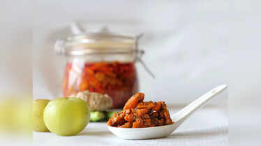
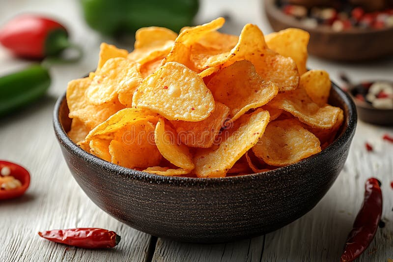

AAM
Classic Mango
Raw mango · mustard oil · red chilli
Made in India · Packed with care
Pure ingredients, authentic taste — from our factory to your table.
A trusted pickle and wafers manufacturer known for quality, hygiene, and traditional recipes made at scale.

01 / The Sonakshi standard
We bring the familiar flavours of home to more tables — with honest ingredients, dependable processes, and recipes that have stood the test of time.
From hand-selected raw mangoes to perfectly sliced potatoes, our unit is built around one simple promise: food you can feel good about serving.
Every batch is processed hygienically, checked carefully, and packed to hold on to the taste that makes people come back for more.
How we make it →*Indicative capacity — update with current business figures.
02 / From the pickle shelf
Made with raw produce, cold-pressed mustard oil, and a generous hand with the masala.
Raw mango · mustard oil · red chilli
Lemon · fennel · asafoetida
Garlic · red chilli · nigella seeds

03 / The wafer counter
Thin-cut potatoes, a clean fry, and flavours that know when to stop. Our wafers are made for chai-time, snack-time, and every time in between.
04 / From source to shelf
Choose produce and spices with character.
Wash, sort, and prep with discipline.
Blend time-tested recipes at scale.
Seal the flavour in every pack.
Release only what meets our standard.
05 / Let's make something tasty
For orders, distribution enquiries, or a conversation about our products, we would love to hear from you.